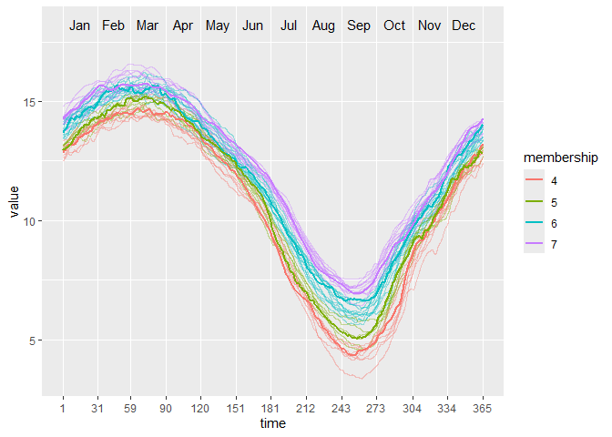

Partitioning using local subregions (PULS) is a clustering technique designed to explore subregions of functional data for information to split the curves into clusters.
Installation
You can install the released version of puls from CRAN with:
install.packages("puls")And the development version from GitHub with:
# install.packages("devtools")
devtools::install_github("vinhtantran/puls")Example
This is a basic example which shows you how to solve a common problem:
library(puls)
library(fda)
#> Loading required package: Matrix
#>
#> Attaching package: 'fda'
#> The following object is masked from 'package:graphics':
#>
#> matplot
# Build a simple fd object from already smoothed smoothed_arctic
data(smoothed_arctic)
NBASIS <- 300
NORDER <- 4
y <- t(as.matrix(smoothed_arctic[, -1]))
splinebasis <- create.bspline.basis(rangeval = c(1, 365),
nbasis = NBASIS,
norder = NORDER)
fdParobj <- fdPar(fdobj = splinebasis,
Lfdobj = 2,
# No need for any more smoothing
lambda = .000001)
yfd <- smooth.basis(argvals = 1:365, y = y, fdParobj = fdParobj)
Jan <- c(1, 31); Feb <- c(31, 59); Mar <- c(59, 90)
Apr <- c(90, 120); May <- c(120, 151); Jun <- c(151, 181)
Jul <- c(181, 212); Aug <- c(212, 243); Sep <- c(243, 273)
Oct <- c(273, 304); Nov <- c(304, 334); Dec <- c(334, 365)
intervals <-
rbind(Jan, Feb, Mar, Apr, May, Jun, Jul, Aug, Sep, Oct, Nov, Dec)
PULS4_pam <- PULS(toclust.fd = yfd$fd, intervals = intervals,
nclusters = 4, method = "pam")
#> Warning: executing %dopar% sequentially: no parallel backend registered
PULS4_pam
#> n = 39
#>
#> Node) Split, N, Cluster Inertia, Proportion Inertia Explained,
#> * denotes terminal node
#>
#> 1) root 39 8453.2190 0.7072663
#> 2) Jul 15 885.3640 0.8431711
#> 4) Aug 8 311.7792 *
#> 5) Aug 7 178.8687 *
#> 3) Jul 24 1589.1780 0.7964770
#> 6) Jul 13 463.8466 *
#> 7) Jul 11 371.2143 *
#>
#> Note: One or more of the splits chosen had an alternative split that reduced inertia by the same amount. See "alt" column of "frame" object for details.You can make a tree plot:
plot(PULS4_pam)
Or, a wave plot:
ggwave(toclust.fd = yfd$fd, intervals = intervals, puls = PULS4_pam)